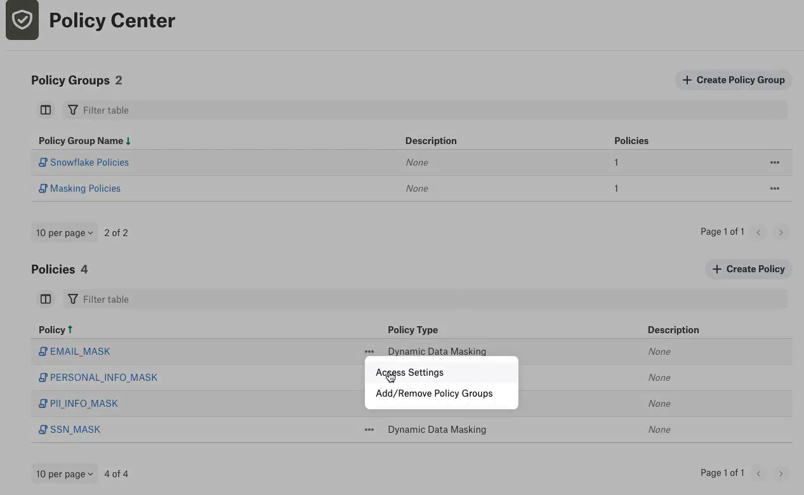
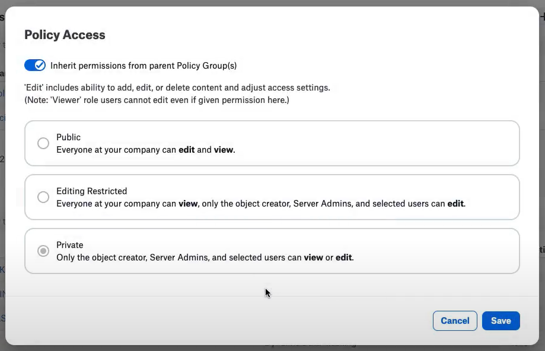
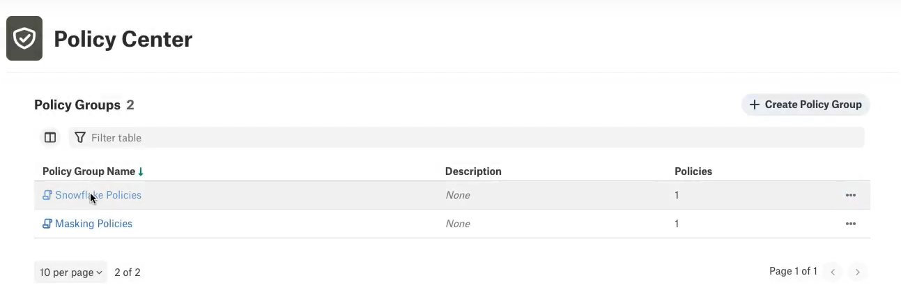
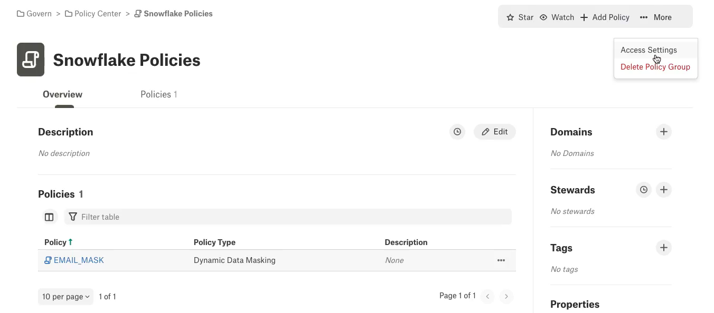
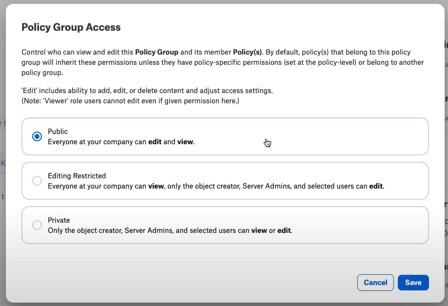

Policy Center Permissions¶
Alation Cloud Service Applies to Alation Cloud Service instances of Alation
Customer Managed Applies to customer-managed instances of Alation
Applies from version 2022.3
In your catalog, you can restrict users’ view and edit access to policies, data policies, and policy groups by setting permissions.
By default, policies, data policies, and policy groups are viewable by everyone. If a user does not have view permissions for a policy, data policy, or policy group, the user will not see the object in Alation.
Policy groups and user groups must be created before setting permissions. Permissions of a policy or data policy can be inherited from a policy group of which it is a member if selected. In order to add policies or data policies to policy groups, a user must be a Server Admin or have edit permissions for the policy group.
If a policy or data policy has differing permissions at the object level and policy group level, the object level permissions will be adhered to.
If a policy or data policy is included in more than one policy group (and each group has different permissions) and inherits permissions from parent policy groups, the permissions will inherit the set of permissions from the policy group which is more restrictive.
A user with Server Admin role can:
Manage permissions for policies, data policies, and policy groups.
A user with Steward role can:
Manage permissions for policies, data policies, and policy groups they create and for others in which they have been added as editors.
Modifying Permissions for Policies¶
To modify permissions for a policy:
Log in to Alation as a Server Admin or a Steward with editor permissions for the policy.
From the Apps menu, click Govern.
Click POLICY CENTER to access the Policy Center.
Click the three dots (…) in the row of the policy which you would like to edit permissions, then select the Access Settings option.

The Policy Access dialog displays with four options: Inherit permissions from parent Policy Group(s), Public, Editing Restricted, and Private.

Select the option depending on what kind of permissions you want to apply:
Inherit permissions from parent Policy Group(s)
Selecting the Inherit permissions from parent Policy Group(s) option allows for parent policy group(s) to control permissions for the policy selected.
If a policy or data policy is included in more than one policy group (and each group has different permissions) and inherits permissions from parent policy groups, the permissions will inherit the set of permissions from the policy group which is more restrictive.
Public
Selecting the Public option allows for all Alation users within your organization to view and edit the policy selected.
Editing Restricted
Selecting the Editing Restricted option allows for all Alation users within your organization to view the policy. Only Server Admins, the object creator, and users selected in the following step may edit the policy selected.
Private
Selecting the Private option allows for only Server Admins, the object creator, and users selected in the following step to view or edit the policy selected.
If Editing Restricted or Private is selected, then select users and/or groups and desired access levels by clicking the + Invite button or (if already present) from the list. Permissions will be applied to the policy and viewing/editing will be restricted to the selected users and groups. Click the Save button.
Modifying Permissions for Policy Groups¶
To modify permissions for a policy group:
Log in to Alation as a Server Admin or a Steward with editor permissions for the policy group.
From the Apps menu, click Govern.
Click POLICY CENTER to access the Policy Center.
Click the Policy Group Name in the row of the policy group which you would like to edit permissions.

Then select the More > Access Settings option towards the upper-right of the page.

The Policy Group Access dialog displays with three options: Public, Editing Restricted, and Private.

Select the option depending on what kind of permissions you want to apply:
Public
Selecting the Public option allows for all Alation users within your organization to view and edit the policy group selected.
Editing Restricted
Selecting the Editing Restricted option allows for all Alation users within your organization to view the policy group. Only Server Admins, the object creator, and users selected in the following step may edit the policy group selected.
Private
Selecting the Private option allows for only Server Admins, the object creator, and users selected in the following step to view or edit the policy group selected.
If Editing Restricted or Private is selected, then select users and/or groups and desired access levels by clicking the + Invite button or (if already present) from the list. Permissions will be applied to the policy group and viewing/editing will be restricted to the selected users and groups. Click the Save button.